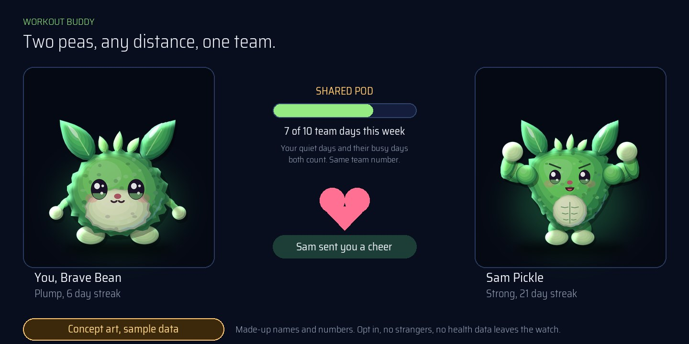

FaceGrabs / In development
In development
Coming to Wear OS and iOS soon
In development
Our faces are heading to Android watches and Apple devices. DC3 goes first. Stay tuned.
DC3
In development
A face rewired by the hour: a dark hex look, preset buttons, day phases and web control, coming in an update.
A workout buddy, across any distance
On the drawing board

A virtual workout partner. You and a friend both have the face, you link up with a short code, and you can each watch the other grow. It is a team, not a contest: each of your own easy active days adds to one shared number, so a casual buddy and a gym buddy can win together.
- Pair with a short code, both of you say yes, and unpair with one tap
- See your buddy's pea at their stage with a friendly line, like "Sam is at Plump, 4 day streak"
- One shared weekly goal that does not need equal effort
- Kind preset cheers only, with no free text and no nagging
- A small welcome back cheer when a buddy returns after a break
No strangers and no search. Ideas? Tell us on the Message board.
A leaderboard for everyone
On the drawing board

We are all on the same journey, so a leaderboard should not belong to the people who already live at the gym. This one would reward showing up, not how much you do. You would compare with peas at your own stage, the boards would reset every week so newcomers can win, and a rest day would not break your streak. It would be optional.
- Longest streak at every stage, from Wilting to Pea-st Mode
- Welcome back: the biggest comeback of the week
- Longest quiet stretch broken, because starting again is the hard part
- Most improved compared with your own last month
- Steadiest week, for steady beats busy
- Cheers and kindness badges for the friends who lift others up
It is an idea and a design so far. Got a board you would love, or one we should leave out? Tell us on the Message board.
Classic bodybuilding poses
On the drawing board
Pea-k already holds some of the classics, like the double biceps and the side chest. The idea is a bigger library of poses: front lat spread, side triceps, abs and thighs, and a few more, so every flex has a favorite.
New outfits, trunks and gear
On the drawing board

More looks for him: other trunks, swimwear and athletic styles, unlocked by playing, kept family friendly. Pick-your-pea personalities are a second idea: a handful of varieties, such as an earnest beginner, a couch spud and a stoic powerlifter, each with their own attitude. His body still comes from your training, but his attitude might not agree with it.
Older and more watches
On the drawing board
A flatter, simpler version of him for 64-color and square screens, such as fenix 7, Forerunner 255 and 955, and Venu Sq. These screens cannot draw him the way the AMOLED ones do, so he would look different. No promise that it works out.
FORGED Events
On the drawing board
Moments that celebrate your milestones.
Glucose complication
On the drawing board
A glucose reading you can add to your watch faces as a complication, so the number is there at a glance next to the time.
A free companion widget
On the drawing board
A free widget that shows graphs and trends for the face, over days and weeks, for DC3.